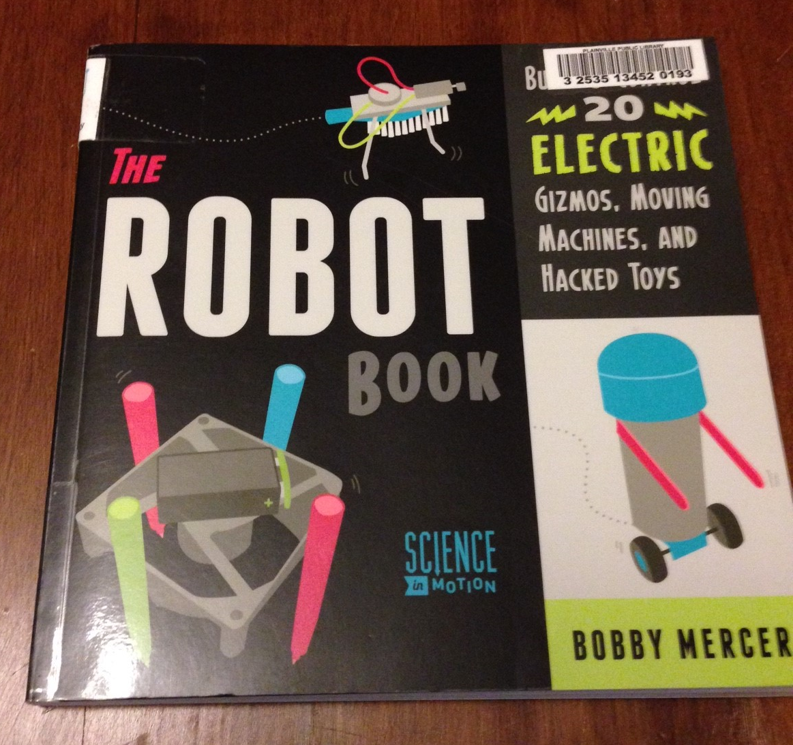
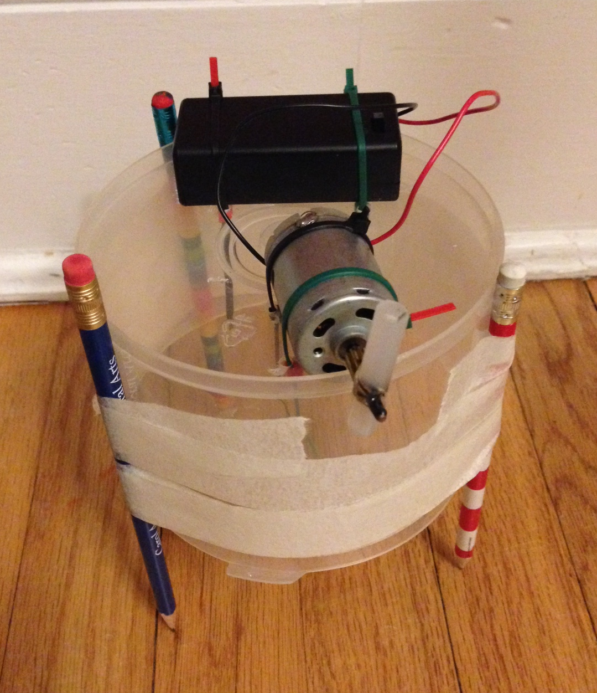
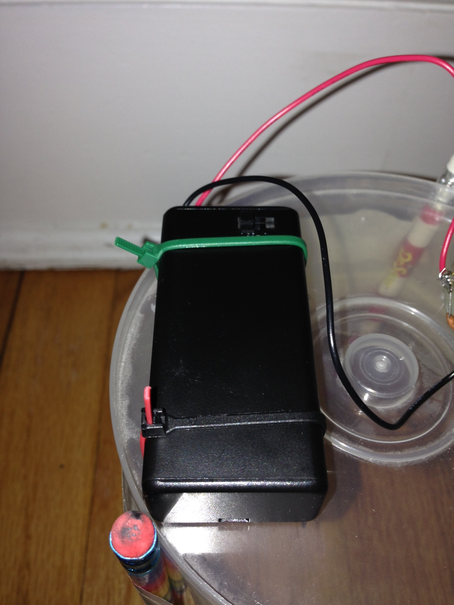
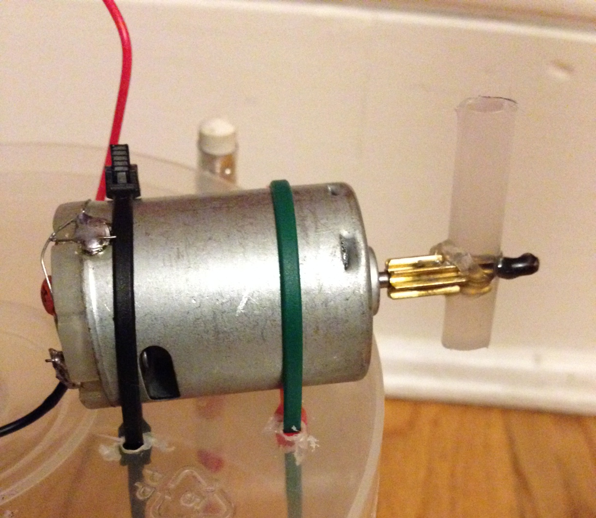

Our First Robot
I have two young boys the oldest, Stephen is six and the younger, Seth is three years old. My six year old Stephen, is currently obsessed with all things robots. I have resisted the urge to go buy an arduino or rasberry pi robotics kit or even a lego mindstorms because I know he is still a little too young to have the attention span to stick with doing anything worthwhile with one (although I would love to have one I just don't have the time either)
Well a few weeks ago My wife found this book at our local library
The book has a number of simple projects for using various scrap bit's and pieces of various toys to hack together something new and interesting. The project I chose to try with Stephen was a vibrating bot with some kind of writing instrument for legs that would draw paterns on a piece of paper.
And Here is the final Product.
One of the only things I did not have on hand was a battery holder for a 9 volt battery. Since I started the project in the morning with a six year old and three year old eagerly waiting to see their new creation come to life I had to find some place to get one fast. Remembering that Radio-Shack is no longer around a quick google search revealed a place on the berlin turnpike (rt 15 in Connecticut) called Cables & Connectors Inc.
There I found a smorgasboard of electronic components and ammong them this litle gem for less than 5 bucks. It's a 9-Volt Battery holder with an integrated on-off switch... SWEET!
This is the motor from one of many old rc cars I had in a box. To make the bot vibrate the motor needs to rotate something off-balance. Heating up the shaft enough to melt a piece of glue stick onto it lopsided did the trick.
After some solder and zip ties here it is... their reaction from the first time they turn it on